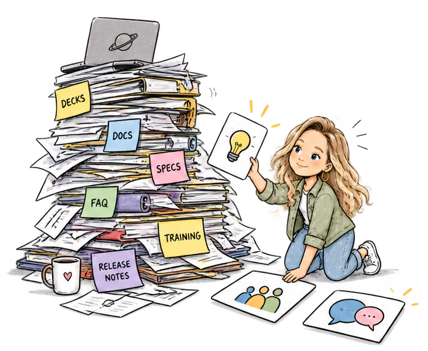
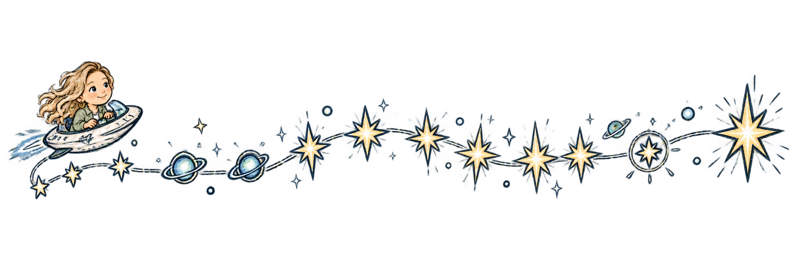

Behind the Work
A complex product, a sales team that needed to get up to speed quickly, and a lot competing for their attention.

The Mission
I didn't need my sellers to be technical experts. I needed to help them recognize when this
product was the right fit. And just as importantly, when it wasn't.
Customers were adopting it for the wrong use cases, running into problems, and sometimes
walking away blaming the product or its cost. Sellers needed enough understanding to start the right
conversation before that happened.
The Challenge

How do you make one product memorable inside an organization with
hundreds of competing priorities?
Sellers were not short on information. There were decks, docs, training modules.
More content wasn't going to solve the problem.
What was missing was context. A few recognizable scenarios
and a way to explain it in a language a customer would understand.
Flight Plan
Sellers listen to other sellers more than they listen to a slide
deck.
That became the idea I built around.
Instead of one big training moment, I wanted people to hear how others were talking about
the
product and see where it was working with real customers.
I needed to give people enough to start the conversation and enough confidence to keep it
going.
The Launch
Into the Cosmos: A Coding Odyssey.
The product name gave me a pretty obvious theme to play with.
Inspired by Cosmos: A Spacetime Odyssey, I created Into the
Cosmos. 
It launched as a bite-sized learning series that ran across two quarters. Each
episode approached the product a little differently. I mixed customer stories, technical
deep dives, mythbusting, and practical resources.
Instead of asking people to absorb everything in one sitting, each episode gave them another
way
into the product. Some built the foundation. Some went deeper technically. And some put
sellers
and technical
specialists at the center, sharing what they had learned from actual customers.
Those peer stories became especially important.
People weren't only hearing what the product could do. They were hearing how someone like
them
had recognized an opportunity, approached the conversation, and put the technology to
work.
The space theme made it memorable. The repetition and stories made it stick.
The Landing
Something shifted as the series went on. The field stopped being just the audience.
✓ The conversation changed. Sellers had clearer scenarios and stories to
bring into their conversations.
✓ Familiarity built confidence. Each episode reinforced the same core
ideas
in a different way. Over time, the field became more familiar with the product without
having to
absorb everything at once.
✓ The community started contributing. People began bringing ideas,
volunteering for episodes, and sharing their own customer stories.
What started as something I was building for the field became something the field helped
shape.
Mission Debrief
What I took with me
I went into this thinking about how to build better technical enablement.
I came out of it thinking much more about behavior.
I learned that people don't adopt products because they've completed training.
They adopt them when they understand where they fit and feel confident enough to talk about
them.
That changed the question I was asking.
Instead of: What content do we need?
I started asking: What do we need people to do differently?
Sometimes the answer is training. Sometimes it's a recognizable customer scenario. Sometimes
it's hearing a peer explain what worked for them.
And occasionally, apparently, it's a trip through space.
It's changing what people do with what they know.
Content is just one of the tools.
← Back to Behind the Work